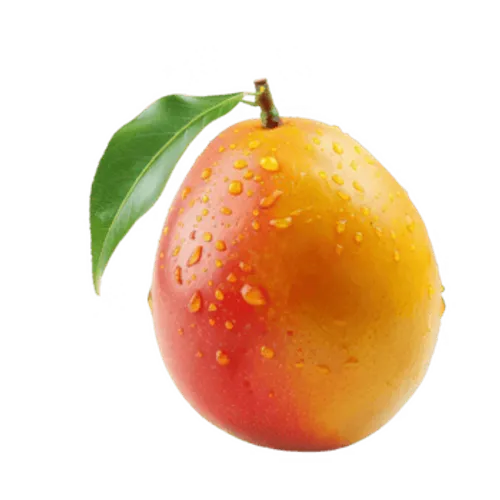
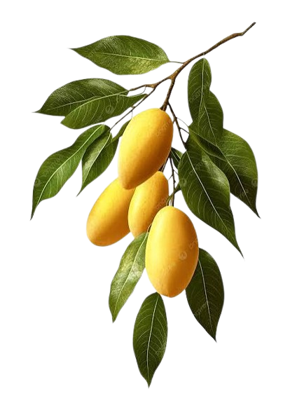

La mangue est un fruit charnu, pesant de 300 g à 2 kg. C'est une drupe, sa chair adhère à un noyau large, plat et gluant. Elle peut être ronde, ovale ou réniforme, et présente une peau jaune, verte ou rouge, qu'il est recommandé d'enlever, car son goût est peu agréable, et elle contient des substances irritantes la rendant peu comestible. Sa chair est jaune foncé, onctueuse, grasse et sucrée, avec un faux goût de pêche et de fleur. Selon les variétés ou lorsque le fruit est trop mûr, la chair devient parfois filandreuse.
Selon les textes, Bouddha reçut en don de la courtisane Ambapali un verger de manguiers pour y méditer et, selon de multiples interprétations, pour lui servir de source de revenus lui permettant ainsi de se consacrer à sa voie. Le manguier aura ainsi tendance à se répandre avec le bouddhisme, atteignant au Ve siècle av. J.-C. la Malaisie, puis l'Extrême-Orient. Le voyageur et pèlerin chinois Xuanzang l'aurait rapporté en Chine de son voyage en Inde. Les Arabes l'introduisent, quant à eux, au Moyen-Orient et en Afrique. En 1328, Jodanus Cutulus, évêque de Columbum, Quilon au Kérala, en fait mention. Dans la première moitié du XVe siècle, le voyageur Nicolò de' Conti en fait la première description connue sous le nom d'amba, du sanskrit amram.
